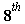

Title, speaker, aim/structure of talk
Title of talk. The classic 'binomial coefficient congruence' of Gauss, and more besides ...
A talk given to the Student Mathematics Society (Trinity College Dublin)
Wednesday March  2017Speaker. John B. Cosgrave (jbcosgrave@gmail.com, web site www.johnbcosgrave.com)
joint work with Karl Dilcher (http://www.mathstat.dal.ca/~dilcher/)
Aim/structure of talk. Here are the main points (I should point out that I am cutting many corners in this presentation):
_________________
Finally I will quickly show how the latter subsequently fed back into our gamma-structure work in connection with "exceptional primes"
There are several beautifully organised slide talks by Karl, and one video, at http://johnbcosgrave.com/publications.php